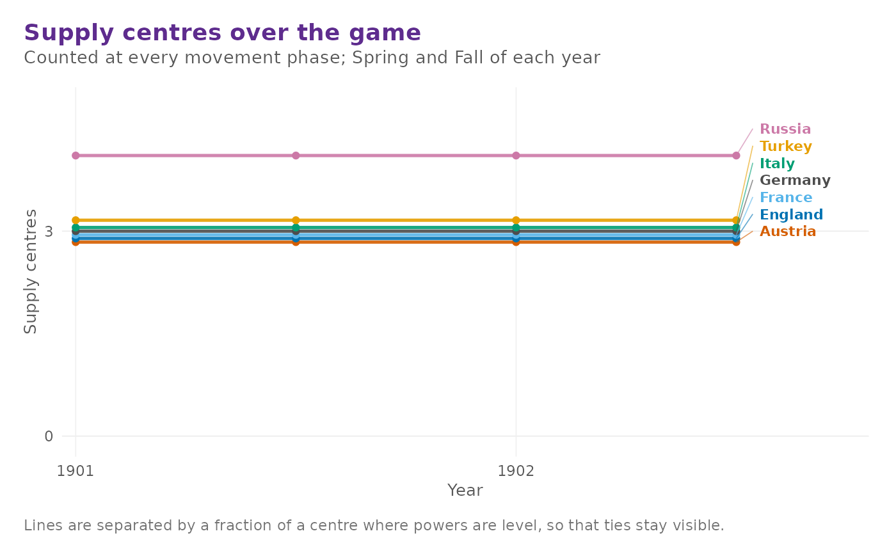

One line per power against the game calendar, with the solo-victory mark drawn and labelled. The final standing is written at the right-hand end of each line so the powers can be told apart without reading a legend.
Arguments
- history
A dp_history object.
- threshold
Draw a reference line at this centre count.
NULLomits it. Default18, the solo-victory mark. The line is skipped, rather than stretching the axis over empty space, in a game where no power came close to it.- labels
Write each power's name at the end of its line. Default
TRUE.
Details
Centre counts are small integers, so powers are level with each other for much of a normal game. Exactly coincident lines would hide all but the last power drawn, so each power's line is offset by a fraction of a centre. The offsets are a fixed, tiny fraction of the axis and are noted on the plot.
Examples
h <- dp_play(bots = "hold", max_years = 2)
dp_plot_sc_history(h)
